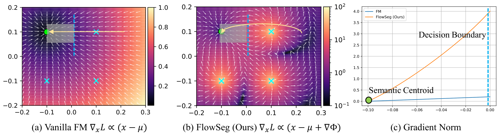
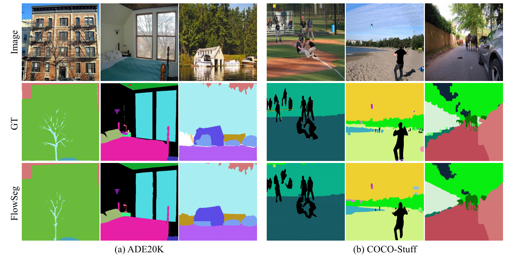
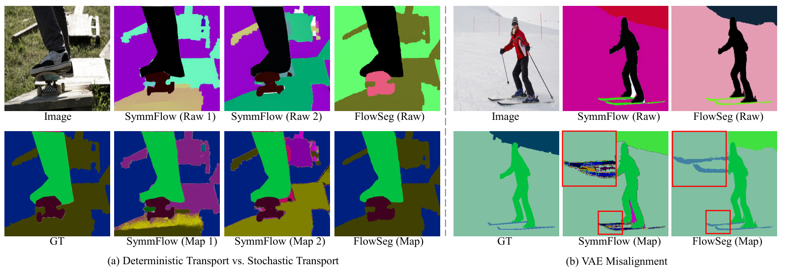

Abstract
Taming diffusion models for generative segmentation has attracted increasing attention. While existing approaches primarily focus on architectural tweaks or training heuristics, there remains a limited understanding of the intrinsic mismatch between continuous flow matching objectives and discrete perception tasks. In this work, we revisit diffusion segmentation from the perspective of vector field learning. We identify two key limitations of the commonly used flow matching objective: gradient vanishing and trajectory traversing, which result in slow convergence and poor class separation. To tackle these issues, we propose a principled vector field reshaping strategy that augments the learned velocity field with a detached distance-aware correction term. This correction introduces both attractive and repulsive interactions, enhancing gradient magnitudes near centroids while preserving the original diffusion training framework. Furthermore, we design a computationally efficient, quasi-random centroid encoding scheme inspired by Kronecker sequences, which integrates seamlessly with an end-to-end pixel neural field framework for pixel-level semantic alignment. Extensive experiments consistently demonstrate significant improvements over vanilla flow matching approaches, substantially narrowing the performance gap between generative segmentation and strong discriminative specialists.


Reshaping the vector field strengthens gradients near semantic centroids and improves separation between class trajectories.


FlowSeg captures semantic regions across diverse indoor and outdoor scenes on ADE20K and COCO-Stuff.


FlowSeg produces consistent predictions across random seeds and improves pixel-level semantic alignment.
BibTeX
@article{wang2026rethinking,
title={Rethinking Vector Field Learning for Generative Segmentation},
author={Wang, Chaoyang and Liang, Yaobo and Peng, Boci and Duan, Fan and Tong, Yunhai},
journal={arXiv preprint arXiv:2603.19218},
year={2026},
}